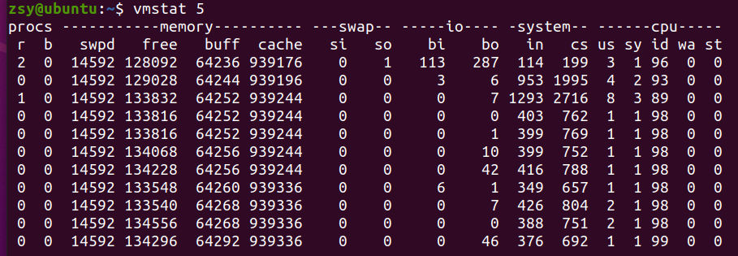
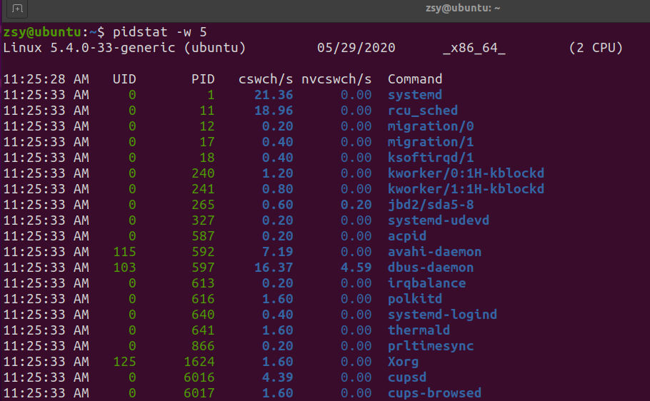
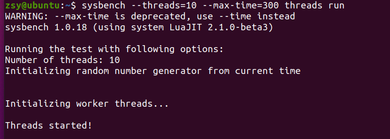
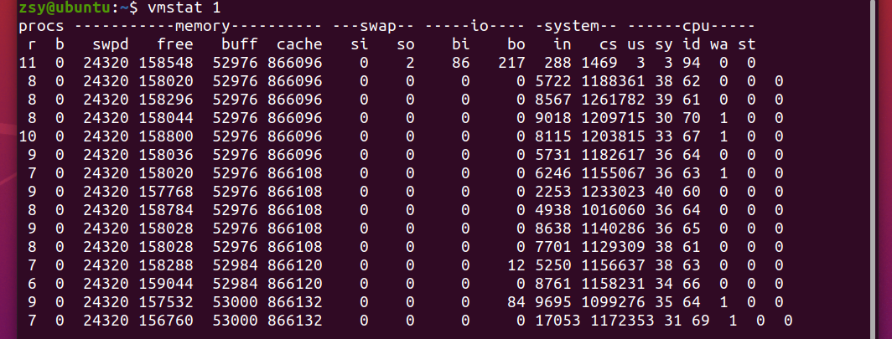
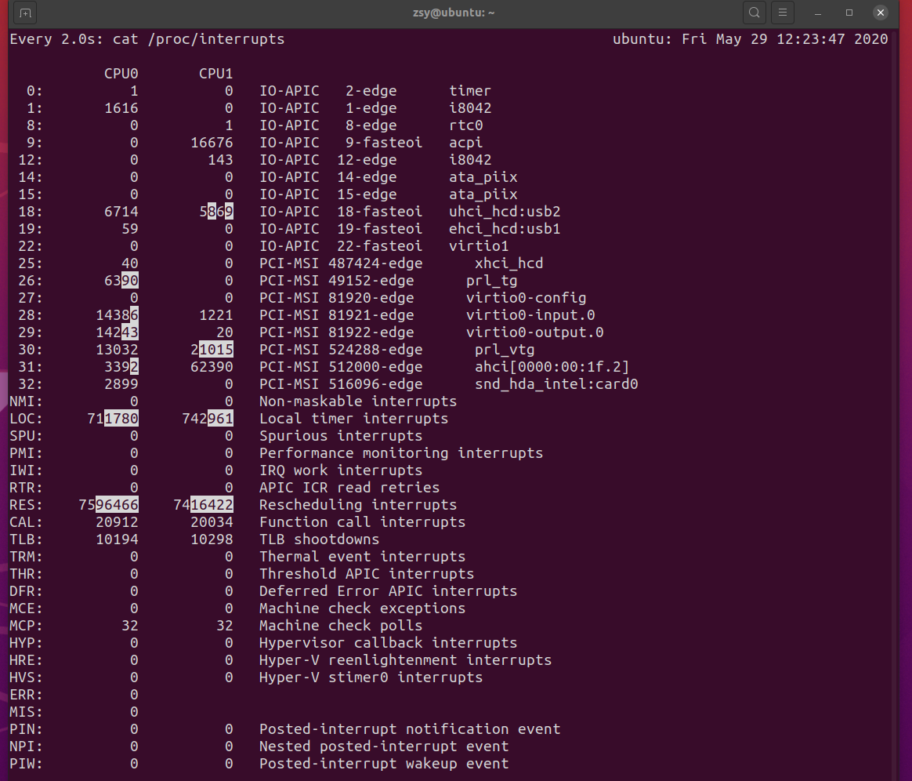

查看系统上下文切换情况
上下文切换，会把cpu时间消耗在寄存器、内核栈及虚拟内存等数据的保存和恢复上，缩短进程真正的运行时间，成为系统性能大幅下降的一个元凶。
使用vmstat查看上下文切换情况，本工具主要分析系统的内存使用情况。例子每间隔5秒输出一组数据：

- cs（context switch）：每秒上下文切换的次数
- in（interrupt）：每秒中断的次数
- r（Running or Runnable）：就绪队列长度，也就是正在运行和等待cpu运行的进程
- b（blocked）：处于不可中断睡眠状态的进程 vmstat给出系统整体的上下文切换情况，pidstat可以查看每个进程的详细情况
间隔5秒输出一组数据：
$ pidstat -w 5

- cswch：每秒自愿上下文切换（voluntary context switches）次数
- nvcswch：每秒非自愿上下文切换（non voluntary context switches）次数
使用sysbench模拟多线程调度切换情况
安装sysbench：
$ sudo apt install sysbench
第一个终端模拟多线程调度：
# 以10个线程运行5分钟的基准测试
$ sysbench --threads=10 --max-time=300 threads run

第二个终端监控上下文切换情况：
# 每间隔1秒输出一组数据
$ vmstat 1

pidstat默认显示进程的指标数，加上-t显示线程的指标数
如何知道中断发生的类型？/proc/interrupts
$ watch -d cat /proc/interrupts

- RES：重新调度中断，表示唤醒空闲状态cpu调度新的任务运行
- IPI：处理器间中断，调度器分散任务到不同cpu的机制